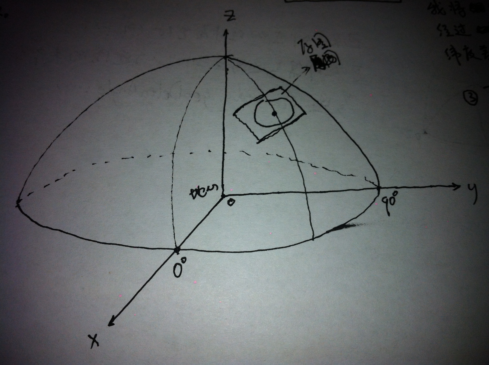

获取地球上已知经纬度的两点(p1,p2)到地心连线的夹角(c)。
推导过程略显绕口,这里不展开详述了。可以直接采用我的公式,注意分清三角函数采用的角度是弧度表示还是角度表示。
已知图片中心点的经纬度center,和一个新点的经纬度obj,计算该点在图片上投影(投影方式见图片)到中心的像素差,图片的像素间的距离为scale.
以地心到赤道0度经线的射线为x轴正方向,以地心到赤道+90度经线的射线为y轴正方向,以地心到北极的射线为z轴正方向,建立直角坐标系,将球坐标转换为直角坐标,以便于下一步的向量运算,如下图。(这部分转换的方法参见类LatAndLongt内部。)
Vector centerPoint:地心到图片中心点的向量。
double dAngle:图片中心点和新点到地心连线的夹角
Vector newPoint:地心到新点在图片上投影点的向量。
Vector newVector:图片中心点到新点在图片上投影点的向量。
Vector eVector:图片中心点的正东方向法向量。
Vector nVector:图片中心点的正北方向法向量。
int x:图片中心点到新点在图片上投影点正东方向像素差,负值表示反方向。
int y:图片中心点到新点在图片上投影点正南方向像素差,负值表示反方向。
public static double getDistanceOnEarth(LatAndLongt p1,LatAndLongt p2){
return getDeltaAngle(p1, p2)*G.R;
}